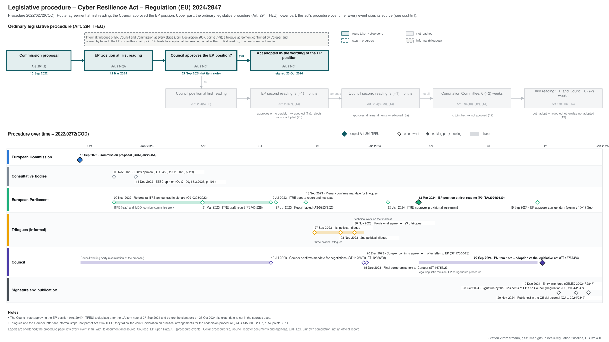

← Regulation timeline › Cyber Resilience Act › Legislative procedure · All procedures
Cyber Resilience Act – Regulation (EU) 2024/2847
Procedure 2022/0272(COD), completed. Drawing: SVG · PNG · PDF (A3) · draw.io · Page as Markdown: cra.md


| Stage | Completed, published 20 Nov 2024 |
|---|---|
| Route (Art. 294 TFEU) | Agreement at first reading: the Council approved the EP position |
| Latest activity | 10 Dec 2024 · Signature and publication: Entry into force (CELEX 32024R2847) |

European Parliament committees
| Committee | Role | Rapporteur | Shadow rapporteurs |
|---|---|---|---|
| ITRE Industry, Research and Energy | Responsible | Nicola Danti (Renew), appointed 26 Oct 2022 | Matteo Gazzini, Beatrice Covassi, Henna Virkkunen (EPP), Evžen Tošenovský (ECR), Ignazio Corrao (Greens/EFA), Marc Botenga (The Left) |
| IMCO Internal Market and Consumer Protection | Role not given | Morten Løkkegaard (Renew), appointed 16 Dec 2022 | – |
Source: EP Open Data API (participations) and the Legislative Observatory (joint committee, opinions declined); names link to each Member's page on the EP website. The API names no committee for shadow rapporteurs; they are assigned by the EP's order of participants, which groups each committee.
Events
| Date | Actor | Event | Document | Source |
|---|---|---|---|---|
| 15 Sep 2022 | European Commission | Commission proposal – COM(2022) 454, based on Art. 114 TFEU (Art. 294(2) TFEU) | COM(2022) 454 | Cellar (CELEX 52022PC0454) |
| 9 Nov 2022 | Consultative bodies | EDPS opinion | OJ C 452, 29.11.2022, p. 23 | Recital 130 CRA; Council I/A item note ST 13757/24, point 2 |
| 9 Nov 2022 | European Parliament | Referral to ITRE announced in plenary | C9-0308/2022 | EP Open Data API, procedure 2022-0272 |
| 14 Dec 2022 | Consultative bodies | EESC opinion | OJ C 100, 16.3.2023, p. 101 | Cellar (CELEX 52022AE4103); ST 13757/24, point 3 |
| 31 Mar 2023 | European Parliament | ITRE draft report | PE745.538 | EP Open Data API (ITRE-PR-745538) |
| 19 Jul 2023 | Council | Coreper confirms mandate for negotiations | ST 11726/23, ST 12536/23 | Council outcome of proceedings ST 12536/23 |
| 19 Jul 2023 | European Parliament | ITRE adopts report and mandate | EP procedure file | EP Open Data API (committee adopting report) |
| 27 Jul 2023 | European Parliament | Report tabled | A9-0253/2023 | EP Open Data API (tabling plenary) |
| 13 Sep 2023 | European Parliament | Plenary confirms mandate for trilogues | EP procedure file | EP Open Data API (plenary endorse committee interinstitutional negotiations) |
| 27 Sep 2023 | Trilogues (informal) | 1st political trilogue | ST 16753/23 | Council note ST 16753/23, point 6 |
| 8 Nov 2023 | Trilogues (informal) | 2nd political trilogue | ST 16753/23 | Council note ST 16753/23, point 6 |
| 30 Nov 2023 | Trilogues (informal) | Provisional agreement (3rd trilogue) | ST 16753/23 | Council note ST 16753/23, points 6–7; ST 17000/23 |
| 15 Dec 2023 | Council | Final compromise text to Coreper | ST 16753/23 | Council note ST 16753/23 (dated 15 Dec 2023) |
| 20 Dec 2023 | Council | Coreper confirms agreement; offer letter to EP – Coreper confirmed the compromise text of 30 Nov 2023 and authorised the Presidency to send the offer letter to Parliament (Joint Declaration 2007, point 14) | ST 17000/23 | Council note ST 17000/23 |
| 23 Jan 2024 | European Parliament | ITRE approves provisional agreement | EP procedure file | EP Open Data API (committee approve provisional agreement) |
| 12 Mar 2024 | European Parliament | EP position at first reading – adopted without legal-linguistic revision (Art. 294(3) TFEU) | P9_TA(2024)0130 | Cellar (CELEX 52024AP0130); EP Open Data API |
| 19 Sep 2024 | European Parliament | EP approves corrigendum (plenary 16–19 Sep) | Council I/A item note ST 13757/24, point 5 | |
| 27 Sep 2024 | Council | I/A item note – adoption of the legislative act – Coreper asked to suggest that the Council approve the EP position (PE-CONS 100/23) (Art. 294(4) TFEU) | ST 13757/24 | Council I/A item note ST 13757/24 |
| 23 Oct 2024 | Signature and publication | Signature by the Presidents of EP and Council | Regulation (EU) 2024/2847 | Cellar (resource_legal_date_signature) |
| 20 Nov 2024 | Signature and publication | Published in the Official Journal | OJ L, 2024/2847 | Cellar |
| 10 Dec 2024 | Signature and publication | Entry into force (Art. 71(1) CRA) | CELEX 32024R2847 · en.md de.md | Art. 71(1) CRA; Cellar |
Notes
- The Council vote approving the EP position (Art. 294(4) TFEU) took place after the I/A item note of 27 Sep 2024 and before the signature on 23 Oct 2024; its exact date is not in the sources used.
- Trilogues and the Coreper letter are informal steps, not part of Art. 294 TFEU; they follow the Joint Declaration on practical arrangements for the codecision procedure (OJ C 145, 30.6.2007, p. 5), points 7–14.
Documents
Every document the Council register, the EU database of the Parliament of Austria or the EP lists for the procedure, with its state: public documents link to the official file; documents that are not public link to their entry in the Austrian database where there is one (metadata only). Status: public; not public; not public, leak available (an unofficial copy is known to circulate outside the institutions; it is neither published nor quoted here). Released: when a document listed as not public was released, by the date of the Council's public PDF (a technical date) or else the day our daily check found it public.
| Date | Document | Kind | Subject | Status | Released | Text |
|---|---|---|---|---|---|---|
| 16 Sep 2022 | ST 12429/22 | Council: transmission note | Proposal for a Regulation of the European Parliament and of the Council on horizontal cybersecurity requirements for products with digital elements and … | public status unknown | – | – |
| 16 Sep 2022 | ST 12429/22 ADD 1 | Council: transmission note | Annexes to the proposal for a Regulation of the European Parliament and of the coucil on horizontal cybersecurity requirements for products with digital … | public status unknown | – | – |
| 16 Sep 2022 | ST 12429/22 ADD 2 | Council: transmission note | Commission staff working document impact assessment report Accompanying the document Proposal for a Regulation of the European Parliament and of the Council on … | public status unknown | – | – |
| 16 Sep 2022 | ST 12429/22 ADD 3 | Council: transmission note | Commission staff working document impact assessment report Annexes to the Impact Assessment Report Accompanying the document Proposal for a Regulation of the … | public status unknown | – | – |
| 16 Sep 2022 | ST 12429/22 ADD 4 | Council: transmission note | Commission staff working document impact assessment report Accompanying the document Proposal for a Regulation of the European Parliament and of the Council on … | public status unknown | – | – |
| 16 Sep 2022 | ST 12429/22 ADD 5 | Council: transmission note | Regulatory scrutiny board opinion Proposal of a Regulation of the European Parliament and of the Council on horizontal cybersecurity requirements for products … | public status unknown | – | – |
| 16 Sep 2022 | ST 12429/22 ADD 6 | Council: transmission note | Commission staff working document executive summary of the impact assessment report Accompanying the document Proposal of a Regulation for the European … | public status unknown | – | – |
| 16 Nov 2022 | ST 14857/22 | Council: transmission note | Opinion on the application of the Principles of Subsidiarity and Proportionality | public status unknown | – | – |
| 14 Dec 2022 | CELEX 52022AE4103 | Opinion | Opinion of the European Economic and Social Committee on ‘Proposal for a Regulation of the European Parliament and of the Council on horizontal cybersecurity … | public | – | – |
| 16 Dec 2022 | ST 16166/22 | Council: transmission note | Opinion on the application of the Principles of Subsidiarity and Proportionality | public status unknown | – | – |
| 16 Dec 2022 | ST 16178/22 | Council: transmission note | Opinion of the European Economic and Social Committee | public status unknown | – | – |
| 21 Dec 2022 | ST 16249/22 | Council: transmission note | Opinion on the application of the Principles of Subsidiarity and Proportionality | public status unknown | – | – |
| 21 Dec 2022 | ST 16268/22 | Council: transmission note | Opinion on the application of the Principles of Subsidiarity and Proportionality | public status unknown | – | – |
| 31 Mar 2023 | PE742.490 | EP draft opinion | DRAFT OPINION on the proposal for a regulation of the European Parliament and of the Council on Horizontal cybersecurity requirements for products with digital … | public | – | – |
| 31 Mar 2023 | PE745.538 | EP draft report (rapporteur) | DRAFT REPORT on the proposal for a regulation of the European Parliament and of the Council on horizontal cybersecurity requirements for products with digital … | public | – | – |
| 31 May 2023 | ST 9943/23 | Council: transmission note | Opinion on the application of the Principles of Subsidiarity and Proportionality | public status unknown | – | – |
| 30 Jun 2023 | PE742.490 | EP opinion | Opinion on the proposal for a regulation of the European Parliament and of the Council on Horizontal cybersecurity requirements for products with digital … | public | – | – |
| 14 Jul 2023 | ST 11726/23 | Council position (mandate) | Mandate for negotiations with the European Parliament | public | – | – |
| 27 Jul 2023 | A9-0253/2023 | EP committee report | Report on the proposal for a regulation of the European Parliament and of the Council on horizontal cybersecurity requirements for products with digital … | public | – | – |
| 31 Aug 2023 | ST 12536/23 | Council position (mandate) | Mandate for negotiations with the European Parliament | public | – | – |
| 18 Dec 2023 | ST 16753/23 | Provisional agreement | Regulation of the European Parliament and of the Council on horizontal cybersecurity requirements for products with digital elements and amending Regulation … | public | – | – |
| 20 Dec 2023 | PE758.004 | Provisional agreement | Provisional agreement resulting from interinstitutional negotiations Proposal for a regulation of the European Parliament and of the Council on horizontal … | public | – | – |
| 20 Dec 2023 | ST 17000/23 | Council note | Regulation of the European Parliament and of the Council on horizontal cybersecurity requirements for products with digital elements and amending Regulation … | public status unknown | – | – |
| 12 Mar 2024 | P9_TA(2024)0130 | EP position | Cyber Resilience Act | public | – | – |
| 11 Apr 2024 | PE 100/23 | Council note | Regulation of the European Parliament and of the Council on horizontal cybersecurity requirements for products with digital elements and amending Regulations … | public status unknown | – | – |
| 18 Jun 2024 | ST 10078/24 | Council note | Proposals under the ordinary legislative procedure expected to undergo the Corrigendum Procedure in the European Parliament (part I) | public status unknown | – | – |
| 27 Sep 2024 | ST 13757/24 | Council note | Draft Regulation of the European Parliament and of the Council on horizontal cybersecurity requirements for products with digital elements and amending … | public status unknown | – | – |
| 27 Sep 2024 | ST 13757/24 ADD 1 | Council note | Draft Regulation of the European Parliament and of the Council on horizontal cybersecurity requirements for products with digital elements and amending … | public status unknown | – | – |
| 24 Oct 2024 | PE 100/23 REV 1 | Council note | Regulation of the European Parliament and of the Council on horizontal cybersecurity requirements for products with digital elements and amending regulations … | public status unknown | – | – |
Texts as Markdown
Unofficial Markdown conversions for reading, searching and project folders; only the official document is authentic. "Read" opens the rendered text on GitHub, where a link to a provision (#art-13, #rec-12, #annex-i) jumps to it.
| Date | Stage | Document | Markdown | Read |
|---|---|---|---|---|
| 20 Nov 2024 | Official Journal | CELEX 32024R2847 | en de | GitHub |
| 5 Dec 2024 | Corrigendum | CELEX 32024R2847R(01) | en | GitHub |
| 2 Jul 2025 | Corrigendum | CELEX 32024R2847R(02) | en de | GitHub |
| 17 Oct 2025 | Corrigendum | CELEX 32024R2847R(04) | en de | GitHub |
| 6 Aug 2026 | Corrigendum | CELEX 32024R2847R(07) | de | GitHub |
Standardisation
Standardisation requests (Art. 10 of Regulation (EU) No 1025/2012) ask CEN, CENELEC and ETSI to draft harmonised standards in support of the act; standards cited in the Official Journal give a presumption of conformity. Planned requests come from the Commission's annual Union work programmes for European standardisation (Art. 8), which are plans, not decisions. Deadlines as set in the request's annexes (hand-checked).
M/606 – C(2025)618 (under execution)
COMMISSION IMPLEMENTING DECISION of 3.2.2025 on a standardisation request to the European Committee for Standardisation (CEN), the European Committee for Electrotechnical Standardisation (Cenelec) and the European Telecommunications Standards Institute (ETSI) as regards products with digital elements in support of Regulation (EU) 2024/2847 of the European Parliament and of the Council of 23 October 2024 on horizontal cybersecurity requirements for products with digital elements and amending Regulations (EU) No 168/2013 and (EU) 2019/1020 and Directive (EU) 2020/1828 (Cyber Resilience Act)
adopted 3 Feb 2025; expires 30 Nov 2027; ESOs: CEN, CENELEC, ETSI. eNorm · decision and annexes · en.md · de.md
| Item | Standard(s) requested | Kind | Deadline | Draft amendment |
|---|---|---|---|---|
| 1 | European standard(s) on designing, developing and producing products with digital elements in such a way that they ensure an appropriate level of cybersecurity based on the risks | new | 30 Aug 2026 | 30 Nov 2026 |
| 2 | European standard(s) on making products with digital elements available on the market without known exploitable vulnerabilities | new | 30 Oct 2027 | – |
| 3 | European standard(s) on making products with digital elements available on the market with a secure by default configuration | new | 30 Oct 2027 | – |
| 4 | European standard(s) on ensuring that vulnerabilities in products with digital elements can be addressed through security updates | new | 30 Oct 2027 | – |
| 5 | European standard(s) on ensuring protection of products with digital elements from unauthorised access and reporting on possible unauthorised access | new | 30 Oct 2027 | – |
| 6 | European standard(s) on protecting the confidentiality of data stored, transmitted or otherwise processed by a product with digital elements | new | 30 Oct 2027 | – |
| 7 | European standard(s) on protecting the integrity of data, commands, programs by a product with digital elements, and its configuration against any manipulation or modification not authorised by the user, as well as reporting on corruptions | new | 30 Oct 2027 | – |
| 8 | European standard(s) on processing only personal or other data that are adequate, relevant and limited to what is necessary in relation to the intended purpose of the product with digital elements (‘minimisation of data’) | new | 30 Oct 2027 | – |
| 9 | European standard(s) on protecting the availability of essential and basic functions of the product with digital elements | new | 30 Oct 2027 | – |
| 10 | European standard(s) on minimising the negative impact of a product with digital elements or its connected devices on the availability of services provided by other devices or networks | new | 30 Oct 2027 | – |
| 11 | European standard(s) on designing, developing and producing products with digital elements with limitted attack surfaces | new | 30 Oct 2027 | – |
| 12 | European standard(s) on designing, developing and producing products with digital elements that reduce the impact of an incident using appropriate exploitation mitigation mechanisms and techniques | new | 30 Oct 2027 | – |
| 13 | European standard(s) on providing security related information by recording and/or monitoring relevant internal activity of products with digital elements with an optout mechanism for the user | new | 30 Oct 2027 | – |
| 14 | European standard(s) on securely and easily removing or transferring all data and settings of a product with digital elements. | new | 30 Oct 2027 | – |
| 15 | European standard(s) on vulnerability handling for products with digital elements | new | 30 Aug 2026 | 30 Nov 2026 |
| 16 | European standard(s) on essential cybersecurity requirements for identity management systems and privileged access management software and hardware, including authentication and access control readers, including biometric readers | new | 30 Oct 2026 | 31 Jan 2027 |
| 17 | European standard(s) on essential cybersecurity requirements for standalone and embedded browsers | new | 30 Oct 2026 | 31 Jan 2027 |
| 18 | European standard(s) on essential cybersecurity requirements for password managers | new | 30 Oct 2026 | 31 Jan 2027 |
| 19 | European standard(s) on essential cybersecurity requirements for software that searches for, removes, or quarantines malicious software | new | 30 Oct 2026 | 31 Jan 2027 |
| 20 | European standard(s) on essential cybersecurity requirements for products with digital elements with the function of virtual private network (VPN) | new | 30 Oct 2026 | 31 Jan 2027 |
| 21 | European standard(s) on essential cybersecurity requirements for network management systems | new | 30 Oct 2026 | 31 Jan 2027 |
| 22 | European standard(s) on essential cybersecurity requirements for Security information and event management (SIEM) systems | new | 30 Oct 2026 | 31 Jan 2027 |
| 23 | European standard(s) on essential cybersecurity requirements for boot managers | new | 30 Oct 2026 | 31 Jan 2027 |
| 24 | European standard(s) on essential cybersecurity requirements for public key infrastructure and digital certificate issuance software | new | 30 Oct 2026 | 31 Jan 2027 |
| 25 | European standard(s) on essential cybersecurity requirements for physical and virtual network interfaces | new | 30 Oct 2026 | 31 Jan 2027 |
| 26 | European standard(s) on essential cybersecurity requirements for operating systems | new | 30 Oct 2026 | 31 Jan 2027 |
| 27 | European standard(s) on essential cybersecurity requirements for routers, modems intended for the connection to the internet, and switches | new | 30 Oct 2026 | 31 Jan 2027 |
| 28 | European standard(s) on essential cybersecurity requirements for microprocessors with security-related functionalities | new | 30 Oct 2026 | 31 Jan 2027 |
| 29 | European standard(s) on essential cybersecurity requirements for microcontrollers with security-related functionalities | new | 30 Oct 2026 | 31 Jan 2027 |
| 30 | European standard(s) on essential cybersecurity requirements for application specific integrated circuits (AS IC) and field-programmable gate arrays (FPGA) with security-related functionalities | new | 30 Oct 2026 | 31 Jan 2027 |
| 31 | European standard(s) on essential cybersecurity requirements for smart home general purpose virtual assistants | new | 30 Oct 2026 | 31 Jan 2027 |
| 32 | European standard(s) on essential cybersecurity requirements for smart home products with security functionalities, including smart door locks, security cameras, baby monitoring systems and alarm systems | new | 30 Oct 2026 | 31 Jan 2027 |
| 33 | European standard(s) on essential cybersecurity requirements for Internet connected toys covered by Directive 2009/48/EC that have social interactive features (e.g. speaking or filming) or that have location tracking features | new | 30 Oct 2026 | 31 Jan 2027 |
| 34 | European standard(s) on essential cybersecurity requirements for personal wearable products to be worn or placed on a human body that have a health monitoring (such as tracking) purpose and to which Regulation (EU) 2017/745 or Regulation (EU) 2017/746 do not apply or personal wearable products that are intended for the use by and for children | new | 30 Oct 2026 | 31 Jan 2027 |
| 35 | European standard(s) on essential cybersecurity requirements for hypervisors and container runtime systems that support virtualised execution of operating systems and similar environments | new | 30 Oct 2026 | 31 Jan 2027 |
| 36 | European standard(s) on essential cybersecurity requirements for firewalls, intrusion detection and/or prevention systems, including specifically those intended for industrial use | new | 30 Oct 2026 | 31 Jan 2027 |
| 37 | European standard(s) on essential cybersecurity requirements for tamperresistant microprocessors | new | 30 Oct 2026 | 31 Jan 2027 |
| 38 | European standard(s) on essential cybersecurity requirements for tamperresistant microcontrollers | new | 30 Oct 2026 | 31 Jan 2027 |
| 39 | European standard(s) on essential cybersecurity requirements for Hardware Devices with Security Boxes | new | 30 Oct 2026 | 31 Jan 2027 |
| 40 | European standard(s) on essential cybersecurity requirements for smart meter gateways within smart metering systems as defined in Article 2 (23) of Directive (EU) 2019/944 and other devices for advanced security purposes, including for secure cryptoprocessing | new | 30 Oct 2026 | 31 Jan 2027 |
| 41 | European standard(s) on essential cybersecurity requirements for smartcards or similar devices, including secure elements | new | 30 Oct 2026 | 31 Jan 2027 |
Source: Annex I to Commission Implementing Decision C(2025)618 (M/606), “List of new European Standards to be drafted”. Draft Commission implementing decision amending Implementing Decision C(2025)618 (replaces Annex I), Ref. Ares(2026)9002280 of 23 Sep 2026, Committee on Standards (C41700), written procedure launched 16 Sep 2026: Moves the 2026 deadlines (items 1 and 15: 30 Nov 2026; items 16–41: 31 Jan 2027) after the ESOs' joint report of 3 June 2026; items 2–14 unchanged. Ceases to apply if CEN, Cenelec or ETSI do not accept it within a month (Art. 2 of the draft). Not adopted. Draft.
Planned (annual Union work programmes)
| Year | Action (open for its text) |
|---|---|
| 2024 | 6. Cybersecurity requirements for products with digital elements
Work programme 2024, Annex, Action 6: en.md · de.md · original on EUR-Lex ↗ |
| 2025 | 6. Cybersecurity requirements for products with digital elements
Work programme 2025, Annex, Action 6: en.md · de.md · original on EUR-Lex ↗ |
| 2025 | 19. Standards driving quantum technology development and the implementation of Post-Quantum Cryptography protocols
Work programme 2025, Annex, Action 19: en.md · de.md · original on EUR-Lex ↗ |
| 2026 | 5. Cybersecurity requirements for products with digital elements
Work programme 2026, Annex, Action 5: en.md · de.md · original on EUR-Lex ↗ |
Other actions of the work programmes that ask for coordination with this act: 2026, Action 2: Standards driving quantum technology development and the implementation of Post-Quantum Cryptography protocols; 2026, Action 6: EU Digital Identity Wallet; 2026, Action 27: Design of unmanned aircraft for low-risk operations.
Work at the standardisation organisations
Projects of CEN, CENELEC and ETSI for the act, from their public work programmes: status, date of the current stage and the next one, and for CEN-CENELEC the forecasted date of the formal vote. Drafts of harmonised standards are not public; only the citation of a standard's reference in the Official Journal gives a presumption of conformity.
| Body | Project | Title | Status | Next step | Vote (forecast) | Request |
|---|---|---|---|---|---|---|
| CEN/CLC/JTC 13 | EN 40000-1-1:2026 WI JT013095 | Cybersecurity requirements for products with digital elements - Part 1-1: Vocabulary | Under Approval (1 Oct 2026) | next stage (2 Nov 2026) | 28 Jul 2026 | M/606 |
| CEN/CLC/JTC 13 | EN 40000-1-2:2026 WI JT013089 | Cybersecurity requirements for products with digital elements - Part 1-2: Principles, product risk management, and lifecycle activities | Under Approval (1 Oct 2026) | next stage (2 Nov 2026) | 28 Jul 2026 | M/606 |
| CEN/CLC/JTC 13 | prCEN/CLC/TR XXX WI JT013100 | Proof-of-concept for the application of EN 18037 in support of the CRA | Under Drafting (28 Aug 2025) | next stage (15 Nov 2025) | – | – |
| CEN/CLC/JTC 13 | prCEN/CLC/TS XXX WI JT013099 | Guidance for the application of EN 18037 in support of the CRA | Under Drafting (28 Aug 2025) | – | – | M/606 |
| CEN/CLC/JTC 13 | prEN 40000-1-3 WI JT013090 | Cybersecurity requirements for products with digital elements - Part 1-3: Vulnerability handling | Under Approval (5 Mar 2026) | next stage (6 Jun 2025) | 6 Jun 2025 | M/606 |
| CEN/CLC/JTC 13 | prEN 40000-9 WI JT013096 | Cybersecurity requirements for products with digital elements – Smart Meter Gateway | Under Drafting (9 Mar 2026) | next stage (30 Nov 2025) | 21 Dec 2026 | M/606 |
| CEN/CLC/JTC 13 | prEN XXX WI JT013091 | Cybersecurity requirements for products with digital elements - Generic security requirements | Under Drafting (5 Mar 2025) | – | 20 Sep 2026 | M/606 |
| CLC/TC 65X | EN IEC 62443-3-3:2019/prAA | Industrial communication networks - Network and system security - Part 3-3: System security requirements and security levels | Under Drafting (27 Jun 2024) | next stage (24 Oct 2024) | 8 Feb 2027 | M/606 |
| CLC/TC 65X | EN IEC 62443-4-1:2018/prAA:2026 | Security for industrial automation and control systems - Part 4-1: Secure product development lifecycle requirements | Under Approval (5 Jun 2026) | next stage (23 Feb 2027) | 23 Feb 2027 | M/606 |
| CLC/TC 65X | EN IEC 62443-4-2:2019/prAA:2026 | Security for industrial automation and control systems - Part 4-2: Technical security requirements for ACS components | Under Approval (5 Jun 2026) | next stage (8 Feb 2027) | 8 Feb 2027 | M/606 |
| CLC/TC 65X | prEN 50770-1 | Security for Operational Technologies - Part 1: Security Profile for firewalls and intrusion detection and prevention systems (based on EN IEC 62443) | Under Drafting (21 Oct 2025) | next stage (17 Feb 2026) | 3 Aug 2027 | M/606 |
| CLC/TC 65X | prEN 50770-2 | (prEN 50770-2) Security for Operational Technologies - Part 2: Security Profile for network management systems (based on EN IEC 62443) | Under Drafting (27 Dec 2025) | next stage (22 Mar 2026) | 3 Aug 2027 | M/606 |
| CLC/TC 65X | prEN 50770-3 | (prEN 50770-3) Security for Operational Technologies - Part 3: Security Profile for physical and virtual network interfaces (based on EN IEC 62443) | Under Drafting (27 Dec 2025) | next stage (22 Mar 2026) | 3 Aug 2027 | M/606 |
| CLC/TC 65X | prEN 50770-4 | (prEN 50770-4) Security for Operational Technologies - Part 4: Security Profile for products with digital elements with the function of virtual private network (VPN) | Under Drafting (21 Oct 2025) | next stage (17 Feb 2026) | 3 Aug 2027 | M/606 |
| CLC/TC 65X | prEN 50770-5 | Security for Operational Technologies - Part 5: Security Profile for routers, modems intended for the connection to the internet, and switches (based on EN IEC 62443) | Under Drafting (21 Oct 2025) | next stage (17 Feb 2026) | 3 Aug 2027 | M/606 |
| CLC/TC 65X | prEN 50770-6 | Security for Operational Technologies - Part 6: Security Profile for security information and event management (SIEM) systems (based on EN IEC 62443) | Under Drafting (21 Oct 2025) | next stage (17 Feb 2026) | 3 Aug 2027 | M/606 |
| CYBER EUSR | EN 304 617 WI DEN/CYBER-EUS-006 Rapporteur: Daniel Thompson-Yvetot | Cybersecurity requirements for browsers | Drafting Stage – 7 VR – EC assessment before EV received (19 Oct 2026) | Resolution of EC comments (31 Oct 2026) | – | M/606 |
| CYBER EUSR | EN 304 618 WI DEN/CYBER-EUS-007 Rapporteur: Daniel Thompson-Yvetot | Cybersecurity requirements for password managers | Approval Stage – Comments categorisation assessed (22 Sep 2026) | Final deliverable endorsed for registrat (23 Nov 2026) | – | M/606 |
| CYBER EUSR | EN 304 619 WI DEN/CYBER-EUS-0018 Rapporteur: Pol Alemany | Cybersecurity requirements for software that searches for, removes, or quarantines malicious software | Approval Stage – Comments categorisation assessed (14 Oct 2026) | Final deliverable endorsed for registrat (23 Nov 2026) | – | M/606 |
| CYBER EUSR | EN 304 620 WI DEN/CYBER-EUS-005 Rapporteur: David Lemarier | Cybersecurity requirements for Virtual Private Networks (VPNs) | Drafting Stage – 7 VR – EC assessment before EV received (28 Sep 2026) | Resolution of EC comments (31 Oct 2026) | – | M/606 |
| CYBER EUSR | EN 304 621 WI DEN/CYBER-EUS-009 Rapporteur: Pol Alemany | Cybersecurity requirements for Network Management systems | Drafting Stage – 7 VR – EC assessment before EV received (14 Oct 2026) | Resolution of EC comments (31 Oct 2026) | – | M/606 |
| CYBER EUSR | EN 304 622 WI DEN/CYBER-EUS-0010 Rapporteur: Julien SAADE | Cybersecurity requirements for Security information and event management (SIEM) systems | Drafting Stage – 7 VR – EC assessment before EV received (15 Oct 2026) | Resolution of EC comments (31 Oct 2026) | – | M/606 |
| CYBER EUSR | EN 304 623 WI DEN/CYBER-EUS-008 Rapporteur: Christian Horchert | Cybersecurity requirements for boot managers | Approval Stage – Comments categorisation assessed (16 Sep 2026) | Final deliverable endorsed for registrat (5 Dec 2026) | – | M/606 |
| CYBER EUSR | EN 304 624 WI DEN/CYBER-EUS-0015 Rapporteur: Sammy Haddad | Cybersecurity requirements for Public key infrastructure and digital certificate issuance software | Approval Stage – Closing of approval procedure (29 Oct 2026) | Comments categorisation assessed (5 Nov 2026) | – | M/606 |
| CYBER EUSR | EN 304 625 WI DEN/CYBER-EUS-0017 Rapporteur: Birom Bah | Cybersecurity requirements for physical and virtual network interfaces | Drafting Stage – 7 VR – EC assessment before EV received (28 Sep 2026) | Resolution of EC comments (31 Oct 2026) | – | M/606 |
| CYBER EUSR | EN 304 626 WI DEN/CYBER-EUS-0012 Rapporteur: Alen Jelavic | Cybersecurity requirements for operating systems | Drafting Stage – 7 VR – EC assessment before EV received (19 Oct 2026) | Resolution of EC comments (31 Oct 2026) | – | M/606 |
| CYBER EUSR | EN 304 627 WI DEN/CYBER-EUS-0013 Rapporteur: Bruno Banelli | Cybersecurity requirements for routers, modems intended for the connection to the internet, and switches | Approval Stage – Comments categorisation assessed (1 Oct 2026) | Final deliverable endorsed for registrat (25 Nov 2026) | – | M/606 |
| CYBER EUSR | EN 304 631 WI DEN/CYBER-EUS-0011 Rapporteur: Kilian Mitterweger | Cybersecurity requirements for smart home general purpose virtual assistants | Approval Stage – Comments categorisation assessed (14 Oct 2026) | Final deliverable endorsed for registrat (4 Dec 2026) | – | M/606 |
| CYBER EUSR | EN 304 632 WI DEN/CYBER-EUS-0014 Rapporteur: Kilian Mitterweger | Cybersecurity requirements for smart home products with security functionalities; including smart door locks, security cameras, baby monitoring systems and alarm systems CRA Smart home security products Topic # 32 full | Approval Stage – Comments categorisation assessed (14 Oct 2026) | Final deliverable endorsed for registrat (4 Dec 2026) | – | M/606 |
| CYBER EUSR | EN 304 633 WI DEN/CYBER-EUS-004 Rapporteur: Gisela Meister | Cybersecurity requirements for Internet connected toys covered by Directive 2009/48/EC that have social interactive features (e.g. speaking or filming) or that have location tracking features CRA Internet connected toys Topic # 33 full scope | Approval Stage – Comments categorisation assessed (14 Oct 2026) | Final deliverable endorsed for registrat (4 Dec 2026) | – | M/606 |
| CYBER EUSR | EN 304 634 WI DEN/CYBER-EUS-003 Rapporteur: Davide Pratone | Cybersecurity requirements for personal wearable | Approval Stage – Comments categorisation assessed (16 Oct 2026) | Final deliverable endorsed for registrat (5 Dec 2026) | – | M/606 |
| CYBER EUSR | EN 304 635 WI DEN/CYBER-EUS-0016 Rapporteur: Jean-Joseph Marty | Cybersecurity requirements for Virtualisation Execution Stack (VES) and Container Execution Stack (CES), including hypervisors and container runtime systems | Approval Stage – Comments categorisation assessed (17 Sep 2026) | Final deliverable endorsed for registrat (11 Dec 2026) | – | M/606 |
| CYBER EUSR | EN 304 636 WI DEN/CYBER-EUS-0020 Rapporteur: Luka Perkov | Cybersecurity requirements for firewalls, intrusion detection and/or prevention systems | Approval Stage – Comments categorisation assessed (6 Oct 2026) | Final deliverable endorsed for registrat (22 Dec 2026) | – | M/606 |
| CYBER EUSR | EN 304 642 WI DEN/CYBER-EUS-0019 Rapporteur: Bengt Sahlin | Cybersecurity Requirements for Network Functions of Telecommunications Systems | Drafting Stage – Early draft (21 Oct 2026) | Mature draft (31 Oct 2026) | – | M/606 |
Sources: CEN/CLC/JTC 13; CLC/TC 65X; ETSI work programme, Directive 2024/2847.
Committees and expert groups
Comitology committees of Member State representatives give opinions on draft implementing acts (Regulation (EU) No 182/2011); expert groups advise the Commission on delegated acts, guidance and implementation; groups set up by an act itself (e.g. the NIS Cooperation Group) bring together the Member States, the Commission and agencies. Meetings and documents as published in the Comitology Register, the Register of Commission expert groups and on the Commission's pages of these groups, from 2024 on.
Product Security Committee
Comitology committee C130100, CNECT; examination procedure (Art. 5, 6 and 7 of Regulation (EU) No 182/2011). Official source: Comitology Register ↗
| Date | Meeting | Documents |
|---|---|---|
| 7 Nov 2025 | 3rd Product Security Committee Meeting | agenda · draft implementing act · draft implementing act v2 · voting sheet · summary record |
| 10 Oct 2025 | 2nd Product Security Committee Meeting | agenda · draft implementing act · summary record |
| 10 Sep 2025 | 1st Product Security Committee Meeting | agenda · draft implementing act · summary record |
Expert Group on Cybersecurity of Products with Digital Elements (CRA Expert Group)
Expert group E03967, CNECT. Official source: Register of Commission expert groups ↗
| Date | Meeting | Documents |
|---|---|---|
| 8 Oct 2026 | 6th meeting of the CRA Expert Group | agenda |
| 10 Jun 2026 | 5th meeting of the CRA Expert Group | agenda · minutes |
| 4 Mar 2026 | 4th meeting of the CRA Expert Group | agenda · minutes |
| 22 Oct 2025 | 3rd meeting of the CRA Expert Group | agenda · minutes |
| 4 Jun 2025 | 2nd meeting of the CRA Expert Group | agenda · minutes · draft delegated act |
| 12 Feb 2025 | 1st meeting of the CRA Expert Group | agenda · minutes · other document |